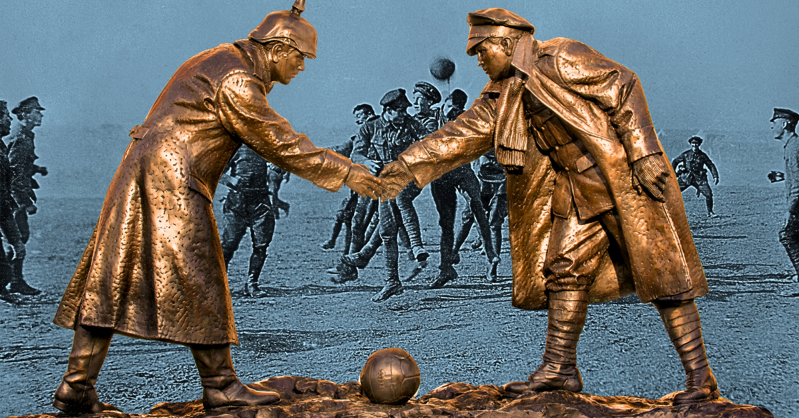

One of the most memorable soccer stories in history happened during the Christmas Truce of 1914 in World War I. Around Christmas, some British and German soldiers on the Western Front stopped fighting for a short time and climbed out of their trenches. They met in the dangerous area between the trenches known as “No Man’s Land.”
During the truce, soldiers exchanged small gifts, sang Christmas songs, talked with each other, and in some places played informal games of soccer. These games were not official matches, but they became a powerful symbol of how sports can bring people together, even during war.
The Christmas soccer game is remembered because it showed the human side of soldiers who were supposed to be enemies. Although the truce did not last long and the fighting continued afterward, the story remains an important moment in both war history and sports history. It shows that soccer has the power to connect people across countries, languages, and conflict.
Would you like to take the quiz to test your new knowledge?
Take Quiz